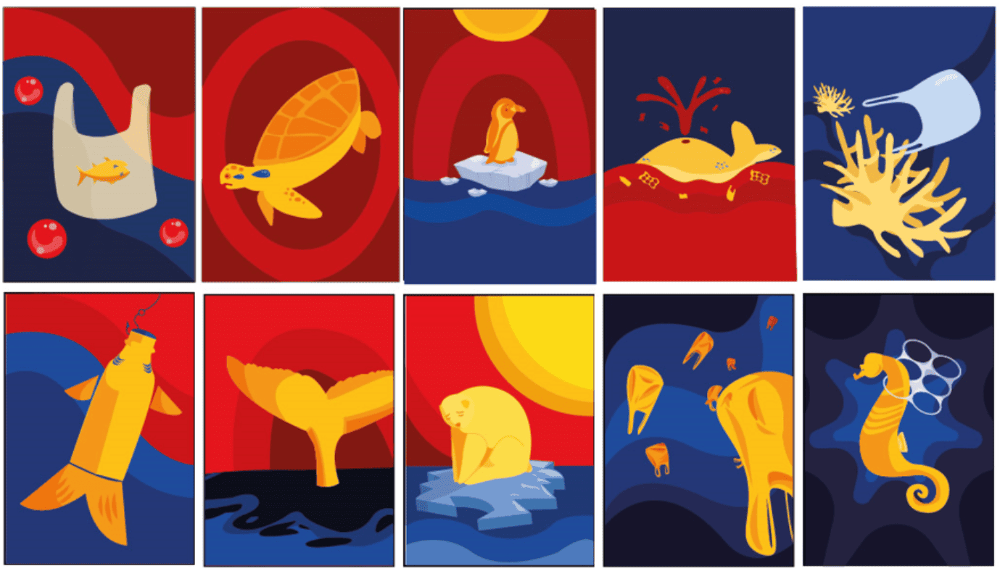

Descripción del proyecto
Trabajo grupal en el que se nos pidió crear un juego de memorice, cartas con la tematica de crisis ambiental y contaminación hecho en clase de fotografia, en este trabajo se aplicó lo aprendido en illustrator, se nos pidio que crearamos este juego con un publico objetivo, en este caso elegimos un publico más adulto y decidimos usar colores acordes a este tema, como el rojo, el azul y el amarillo.
Cliente
Nombre de cliente
Tiempo de desarrollo
1 semana
Si necesitas algo como esto, no dudes en hablarme.
contáctameTecnologías utilizadas
